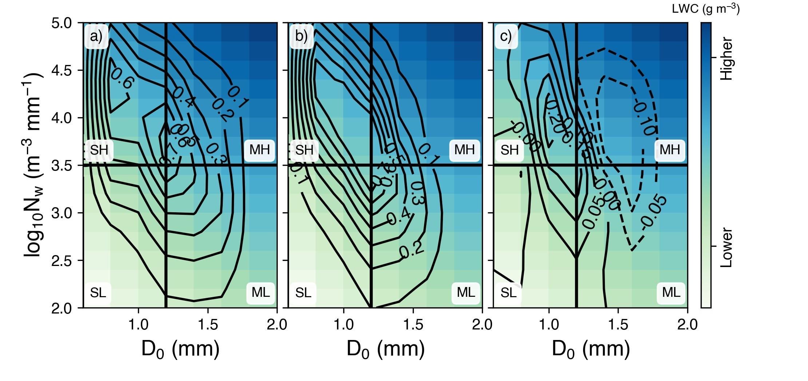

Welcome!
I am a research scientist in the Atmospheric Science Department at Colorado State University where I work with Prof. Michael Bell in the Tropical Weather and Climate Research group. My research focuses on the processes associated with heavy rainfall in the tropics.
I received my PhD from the University of Washington, where I worked with Prof. Robert Houze, Jr. to understand how external forcings affect the three-dimensional structure of tropical cyclones.
Recent Publications
DeHart, J. C., and M. M. Bell: A Comparison of the Polarimetric Radar Characteristics of Heavy Rainfall from Hurricanes Harvey (2017) and Florence (2018). J. Geophys. Res. Atmos., 125.
Fig. 9. a) Joint probability distribution (contours) of range-weighted NW and D0 values calculated from the KHGX polarimetric data for Harvey between 0000 UTC on 26 August and 0000 UTC on 31 August. Theoretical LWC values (colors) are calculated from Equation 2. Labels indicate the different DSD quadrants (SL: low-concentration small drops, ML: low-concentration medium drops, SH: high-concentration small drops, and MH: high-concentration medium drops). b) As in a), but for data from KMHX for Florence between 0000 UTC on 13 September and 1922 UTC on 15 September, when the radar went offline and c) the difference joint probability distribution between Florence/KMHX and Harvey/KHGX (dashed contours indicate frequencies were greater for KHGX).
Recent Presentations
DeHart, J. C., and M. M. Bell: Mechanisms Contributing to the Heavy Rainfall Associated with a Meiyu Front near Taiwan (January 2020). 100th AMS Annual Meeting, Boston, MA, talk.